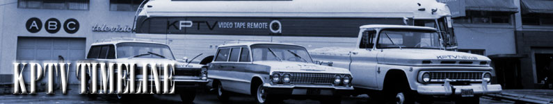

|
|
|
 A year-by-year look at the events at Oregon's first television station.
July 1 The FCC (Federal Communications Commission) lifts a freeze on new applications for TV stations, which it imposed on September 30, 1948. August 25 Tower construction begins on Council Crest. September 17 The FCC grants approval for KPTV to begin over-the-air broadcasting. September 18 KPTV begins broadcasting a test pattern. September 20 KPTV signs on as the first television station in Oregon, and the first commercial UHF television station in the world. September 23 KPTV airs Vice-President Richard Nixon's "Checkers" speech. October 1 KPTV begins regular telecasts, using shows from all four networks, NBC, CBS, ABC and DuMont. October 12 KBTV (9) in Denver, Colorado becomes the first VHF station to sign-on after the FCC freeze is lifted.
February 1 Just four months after sign-on, television set circulation in the KPTV viewing area reaches 64,846. March 19 First Coast-to-coast telecast of the Academy Awards, with host Bob Hope. April 24 Portland's first live television show is broadcast. Norman Wallace anchors a 15 minute news program with a sports report by Bill Clayton. April 27 Portland's first daily show, What's Cooking? with Barbara Angell, is telecast live at 9:30am. The cooking class program will air every Monday thru Friday at this time. June 1 After running programs from all four networks (ABC, CBS, DuMont and NBC), KPTV signs a full-term basic affiliation contract with NBC. The contract will last for two years. October 15 KPTV is no longer the only station in town, as KOIN (6) signs on, as a CBS affiliate.
April 15 KVAL (13) begins broadcasting. The first station in Eugene, Oregon, it is, like KPTV, an NBC affiliate. August 1 Nearly two years after sign-on, television set circulation in the KPTV viewing area hits 181,034; nearly three times the number just 18 months before. August 11 KPTV transmits the first network color broadcast in Oregon. September KPTV becomes the "most powerful" station in Oregon, by increasing its transmitter output from 17,600 watts to 204,000 watts. November 17 Following the FCC's extending the ownership maximums for TV station owners, The Empire Coil Company is purchased by the Storer Broadcasting Company. The purchase includes KPTV.
March 7 First coast-to-coast telecast of the Emmy Awards, hosted by Steve Allen. March 8 KLOR, Channel 12 begins broadcasting, as an ABC affiliate. April 23 KPTV becomes the first local station in Oregon to originate a color telecast. The program, called "Colorama," is a one-hour color film. October 31 "The Powerand Story," the first series of filmed TV shows ever to be telecast in color in Oregon, debuts on KPTV. The program pictures the dramatic growth and progress taking place throughout the Pacific Northwest.
August Despite rumors that NBC is dissatisfied with the ratings on KPTV, the station signs another contract with the network. September KPTV owner, Storer Broadcasting Company, continues its efforts to obtain Channel 3, in hopes of moving the UHF signal to the easier-to-receive VHF. However, a Salem group is fighting Storer for the rights to the channel. December 17 KLOR (12) loses it's affiliation with ABC, as KGW (8) goes on the air. KLOR will function as an independent until the following May.
April George Haggerty purchases KPTV Channel 27 and another Portland station, KLOR Channel 12. May 1 KPTV Channel 27 and KLOR Channel 12 are merged into one station, KPTV Channel 12. August 12 KPTV premieres High Time, Portland's first music show for teenagers, with host Ed Gilbert. On this same day, American Bandstand premieres on KGW (8), although the show had premiered nationally one week earlier.
April 26 KPTV changes network affiliation from NBC to ABC. June 29 KHTV, broadcasting on KPTV's old UHF frequency, channel 27, goes on the air. September 1 KPTV is purchased by Bing Crosby and the NAFI Corporation for upwards of four million dollars. September 1 John Hansen takes over as General Manager
September 26 KPTV airs the first Nixon-Kennedy
presidential debate, via the ABC Network. October 13 KPTV airs the third Nixon-Kennedy presidential debate, via the ABC Network. October 21 KPTV airs the fourth and final Nixon-Kennedy presidential debate, via the ABC Network. December 19 KEZI (9) in Eugene signs on as an ABC affiliate.
August 11 ABC renews its affiliation agreement with KPTV for two years, effective September 1.
March 15 KATU (2) signs on as an independent station. First VTR remote broadcast: NCAA Track and Field Meet, Eugene, Oregon
First live remote: Buckaroo Hockey Game, covered for KTTV November 29 ABC notifies KPTV that they will terminate their affiliation agreement with the station on March 1, 1964.
March 1 KPTV loses the ABC affiliation to KATU (2) and becomes an independent. August 31 "Ramblin' Rod" Anders takes over as host of "Popeye's Pier 12," replacing Addie Bobkins.
September 19 After nine years on CBS, Perry Mason reruns premiere on KPTV. The show will become a perennial favorite, running into the 21st century.
KPTV telecasts Oregon's first local, live, color remote football game. KPTV produces the first hi-band color video tape commercials in the state.
KPTV becomes the number one independent station in the country in overall audience share.
September 29 Cancelled after three years by NBC, Star Trek reruns premiere on KPTV. The show will run, in various time periods, for the next 30 years, until the exclusive rights are purchased by cable's Sci-Fi Channel.
January 5 KPTV establishes a nightly 10 O'Clock News, the first in the Portland market. February 24 KVDO (3), Salem's first TV station, signs on as an independent. KPTV broadcasts the first live schedule of the Portland Trailblazers road games after the Blazers joined the NBA.
July 10 KPTV telecasts the first WFL Football Game: Philadelphia Bell vs. Portland Storm
April 25 First telecast from Seattle Kingdome: Timbers vs. Sounders April-August KPTV televises five Portland Timbers soccer games.
August KPTV is granted a license for a satellite receiving earth station and becomes the first station in Portland to receive programming via satellite.
November 21 KECH (22) signs on as a UHF independent station from Salem.
September 20 KPTV celebrates 30 years of broadcasting with an on-air special.
October 9 KPDX (49) signs on as an independent.
February KPTV signs an agreement with Cable News Network (CNN) so that the station's 10 p.m. news will have access to both the main CNN programming and the CNN Headline Service. The contract takes effect March 1.
October 9 KPTV airs the premiere of The Late Show Starring Joan Rivers at 11:00pm, launching the Fox Broadcasting Network.
April Fox programming enters prime-time, with a two-hour block on Saturdays, and a three-hour block on Sundays. September Premiere of Star Trek: The Next Generation.
"View" magazine names KPTV as one of the top 25 television stations in the nation. August 28 Fox broadcasts the annual Emmy Awards, and with it's conclusion, KPTV relinquishes its affiliation with the Fox Network. The following day, KPTV becomes an independent again, with the Fox affiliation transferring to KPDX (49).
August Ramblin' Rod celebrates 25 years on the air, with an anniversary special. KPTV general manager Marty Brantley is honored by "View" magazine as General Manager of the Year in markets 26-50.
KPTV's Poison Sand: The Umatilla Army Depot receives the Bronze Award, Investigative Report, New York International Film Festival.
Reporter Lars Larson wins the coveted Peabody Award for the documentary, Mt. Saint Helens: A Decade Later. This documentary is also honored with the Ohio State Award.
April 30 After 39 years, Gene Brendler retires. September 8 Northwest Reports, the first locally-produced weekly magazine show in the nation premieres. Magic in the Air '92 is awarded the 1992 Iris Award from the National Association of Television Program Executives.
January 7 KPTV gets the country's highest ratings for the series premiere of Star Trek Deep Space Nine. May 30 KPTV begins broadcasting 24-hours a day, adding overnight movies and syndicated programs. The National Headliner Award is presented by the Press Club of Atlantic City for KPTV's Northwest Reports: Russia: The Secret Revolution. KPTV's Northwest Reports: Bright Idea is tapped for the 1993 Silver Gavel Award from the American Bar Association.
May KPTV gets the country's highest ratings for the series finale of Star Trek: The Next Generation. KPTV President and General Manager Marty Brantley is named to the National Association of Broadcasters Television Board of Directors. Beyond Eden's Gate: The Legacy of the Oregon Trail is awarded the National Cowboy Hall of Fame's Western Heritage Award for Outstanding Factual Narrative. The 10 O'Clock News is named Best News Program in the Portland metropolitan television market for 1993 by the Oregon Associated Press Broadcasters Association.
January 16 KPTV becomes an affiliate of the United Paramount Network with UPN's first evening of programming, the two-hour premiere of Star Trek Voyager. The 10 O'Clock News is honored with three first place awards and five honorable mentions by the Oregon Associated Press Broadcasters Association in its 1994 competition. KPTV wins more of the AP awards than any other Portland station. Beyond Eden's Gate: The Legacy of the Oregon Trail is selected as a finalist for the 1995 Telly Awards. The Society of Professional Journalists honors KPTV with 12 awards, including five first place honors, in its 1994 television competition in Oregon and Washington. This earns KPTV the distinction of winning more SPJ awards than any other Portland television station, and more first place awards than any station in Seattle or Portland. Northwest Reports is awarded a Northwest Regional Emmy for its story "The Round File" in the category of Outstanding Reporting-Investigative by the Seattle Chapter of the National Academy of Television Arts and Sciences. August 1 General Manager Marty Brantley officiates at the groundbreaking ceremony for KPTV's new facility, on the east bank of the Willamette River, just north of the Ross Island Bridge.
March As construction nears completion, KPTV employees begin moving into Channel 12's new eastside residence. The old building on NW 20th Place will be sold, gutted and remodeled by the new owner. August 26 Good Day Oregon, the first live locally-produced morning news and entertainment program in Oregon, premieres weekdays 7:00-9:00am. It is preceded by Oregon's News 12 at Six. The National Silver Bell Award is presented to KPTV in recognition of commitment to community service. One Oregon, a station-wide community service campaign is launched.
March 26 Ramblin' Rod Anders tapes his last "Ramblin' Rod Cartoon Show," retiring after 33 years on-the-air. The final show airs a few days later, but several years later, viewers continue to call the KPTV switchboard, requesting reservations. Station-of-the-Year honors are bestowed by the Oregon Association of Broadcasters recognizing KPTV for it's programming, promotion, commercials and public service efforts. A One Oregon special is named Best Public Affairs Program by the Oregon Association of Broadcasters. The 10 O'Clock News is named Best News Program--Portland by the Associated Press. Seven additional awards were presented to The 10 O'Clock News. The 10 O'Clock News receives eight awards, including First Place in "Breaking News" and a sweep of the "Feature Photojournalism" category at the Pacific Northwest Excellence in Journalism Awards.
KPTV is named "Station of the Year" by the Chris-Craft/United group.
September 7 Good Day Oregon expands to four hours in the morning, beginning at 5:00am. October Chris-Craft Industries Inc., owner of KPTV as well as being half-owner of the UPN TV network, is rumored to be exploring the sale of some or all of its 10 television stations, and talking to major media companies including CBS Corp., News Corp. (Fox), Disney (ABC), and General Electric Corp.'s NBC unit.
February Rumors in the television industry speculate that KPTV owner Chris-Craft is in negotiations to sell its station group to Viacom, owner of CBS. NewsCorp (owner of Fox) and Tribune are also said to be interested in a deal. Longtime General Manager L. Martin (Marty) Brantley retires. June KPTV begins broadcasting a digital signal on channel 30.
July 31 NewsCorp, the company that owns the Fox Television Network and Fox Television Stations, buys Chris-Craft. The purchase includes all 10 of Chris-Craft's television stations. Other stations included in the deal: WWOR, New York, NY; KCOP, Los Angeles, CA; KMSP, Minneapolis, MN; KMOL, San Antonio, TX; KTVX, Salt Lake City, UT; KUTP, Phoenix, AZ; WOFL, Orlando, FL; WUTB, Baltimore, MD; and KBHK, San Francisco, CA.
June 17 NewsCorp trades KPTV to Meredith Corporation in exchange for WOFL in Orlando, Florida. KPTV and KPDX (49) become Portland's first television duopoly (two stations owned by one company) under new FCC rules. September 20 KPTV celebrates 50
years of broadcasting.
This page last updated on August 17, 2025 |
|||||||||||||||||||||||||||||||||||||||||||||||||||

|
Yesterday's KPTV Website design and content ©2003-2025 by Ron Dunevant, LLC unless otherwise noted. |